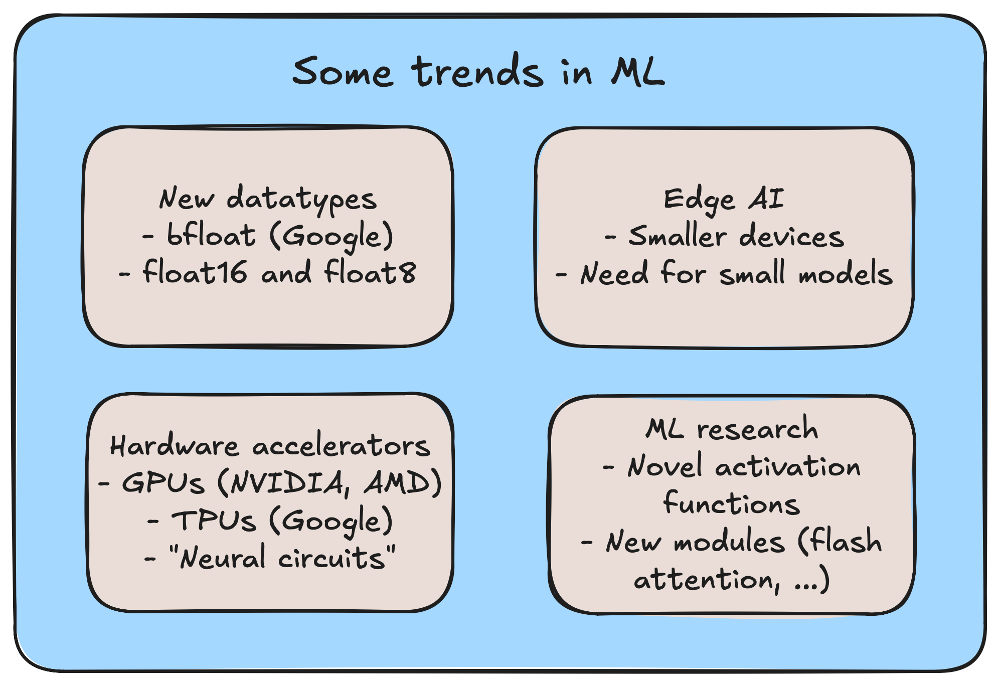
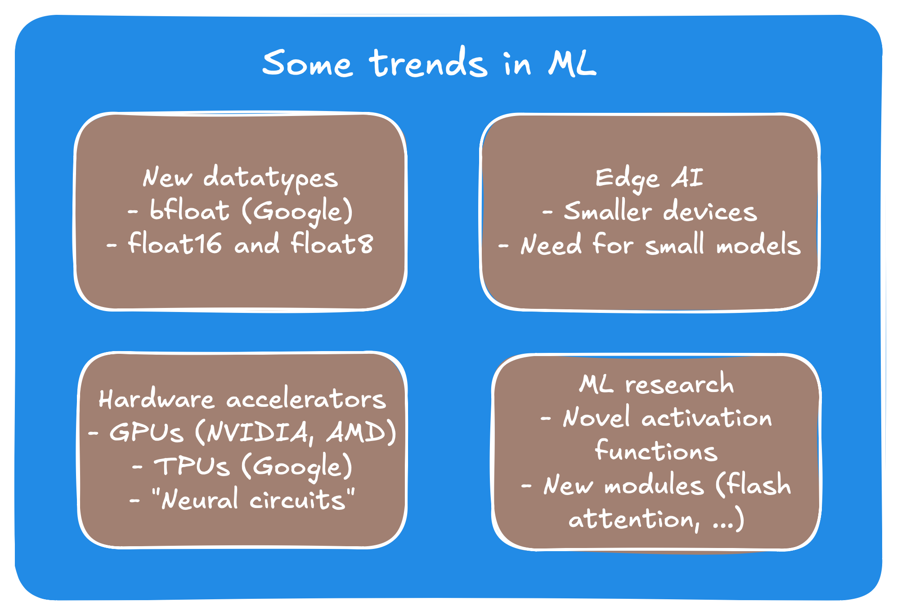
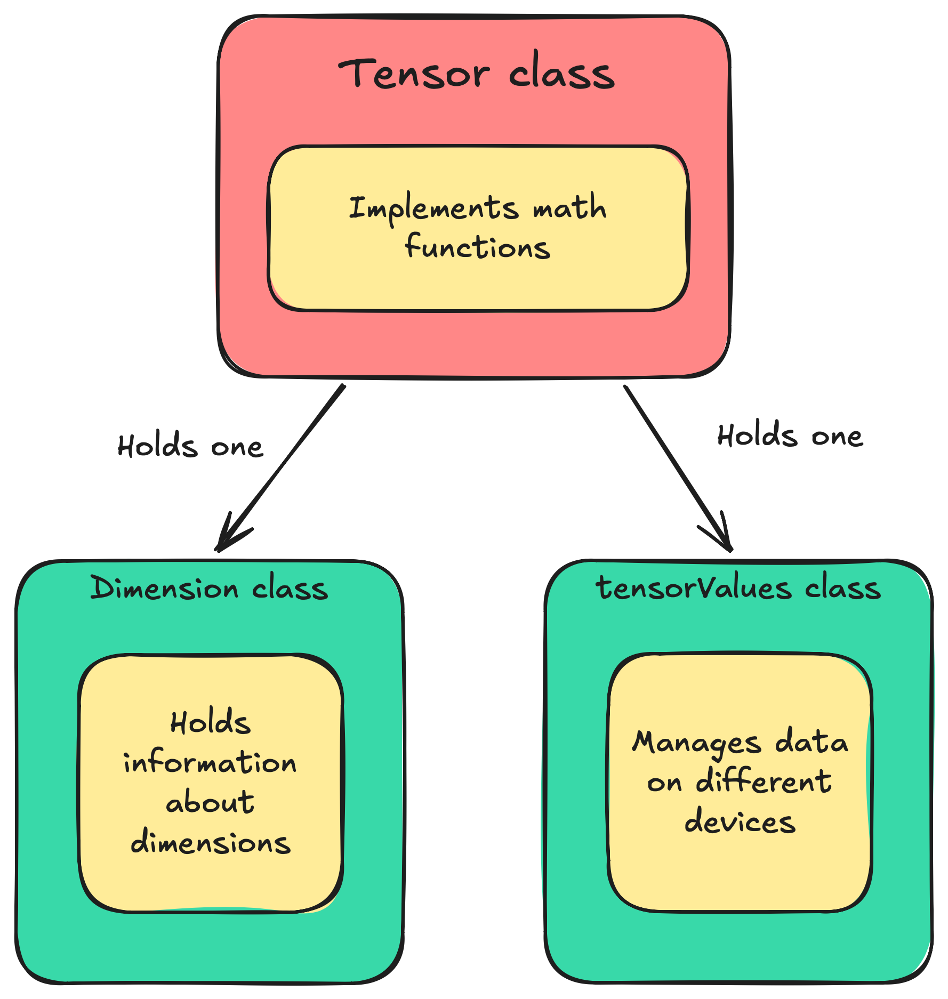
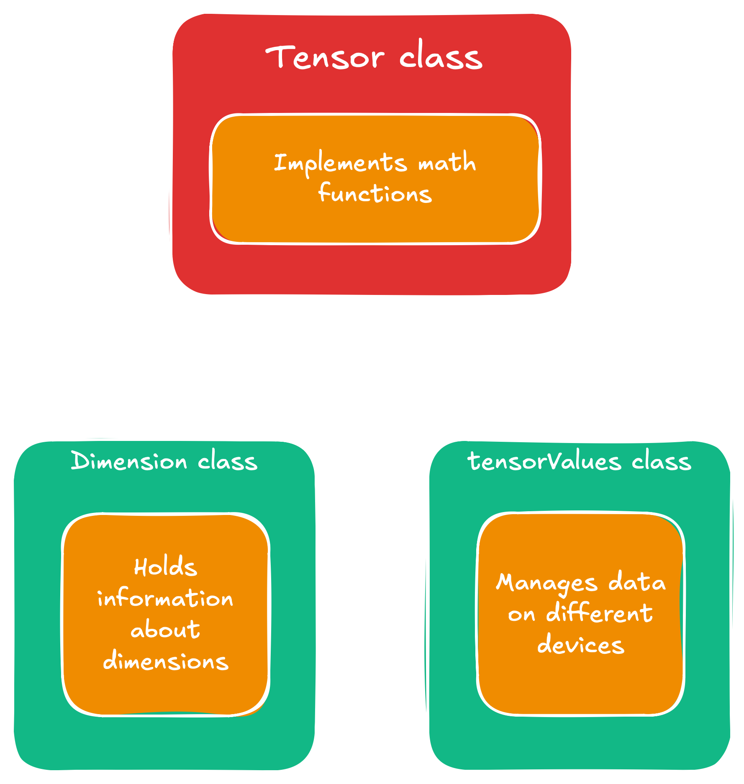

If you are like me then chances are things are a whole lot more fun when you
understand how they work from the ground up. Having used PyTorch and Tensorflow/Keras for
a while I never really understood why things are the way they are in those. So I decided
to implement my own small library to train neural networks. It turned out to be quite
similar to PyTorch in its frontend, making me like PyTorch a whole lot better in the end. This
multi-part series will walk you step-by-step through the components that are necessary
to build your own library. The posts planned so far are:
Part 1 - Tensor & Python frontend
Part 1 - Tensor & Python frontend:
First we introduce the basic structure of the Tensor. By the end of this one
we will have basic Python interface to instantiate Tensors and do basic operations
on them such as MatMul, addition, and elementwise multiplication. This will be the easiest
to grasp blogpost, as we lay the foundation for the more specialized ones that follow, and will
be mainly about software design.
Part 1: Tensor interface and Python bindings.Part 1: Tensor interface and Python bindings.
Part 2 - Autograd and training pipeline
Part 2 - Autograd and training pipeline:
Part 2 will be all about training. We will introduce the
computational graph, show how we can build it dynamically during run-time, how to use it to enable autograd,
and everything that we needfor a basic network implementation. It will conclude in a running MNIST end-to-end
training pipeline built from scratch.
Part 2: Autograd and training pipeline.Part 2: Autograd and training pipeline.
Part 3 - CUDA backend implementation and optimization
Part 3 - CUDA backend implementation and optimization:
Having built a minimal MNIST example,
we take a break from ML itself and will start to
make it actually practical to use. The main challenge for anything ML from the users
perspective are performance and energy/hardware efficiency. To do so we will enable the
GPU by implementing our backend in CUDA. We will then optimize the CUDA backend step-by-step
using profilers (NSYS and NCU).
Part 3: CUDA backend implementation and optimization.Part 3: CUDA backend implementation and optimization.
Part 4 - CPU backend optimization
Part 4 - CPU backend optimization:
For everyone who does not have an NVIDIA GPU at hand,
but also for the fun of it, we will
optimize our C++ backend for the CPU version as well. We will use techniques such as cache
optimization, thread pools, and hardware accelerators such as AVX to achieve better runtime.
Part 4: CPU backend optimization.Part 4: CPU backend optimization.
If we still have time we can then continue implementing advanced models such as transformers (the basis for LLMs)
and modern computer vision modules, and provide further optimization techniques guided by larger models.
The blogposts themselves explain the main points, programming techniques, and design choices,
while everything is backed up by a real
GitHub repository that has been
built in real time and can be used for a full executable example. Git commits and release notes index
the correct versions.
Preliminary thoughts
Before we start we want to think about the overall structure that we want to have. We want our
design to be flexible for maintainance, modular, and easy to change. In short, we want to obey
the SOLID principles.
Because neither of us can anticipate what is going to happen in the future we can make decisions
now that minimize the risk of major overhauls with a little bit of foreshadowing. While thinking
about everything is probably beyond the scope of this project, we can consider the following trends
to hedge ourselves a little against gruesome refactoring sessions.

Current trends shaping machine learning system design.

Current trends shaping machine learning system design.
Securing our camp, we want the following:
Do not settle for a datatype yet, but use a generic one we can quickly find and exchange.
Same goes for tensor representations for edge devices.
Keep the data management device agnostic to support GPUs and other types of special hardware.
Make things as modular as possible to incorporate new research as quick as possible.
We will go further into those below, but two things to start with: Because we can see that the dimensions and
the fundamental data types of representation are changing we can make our future lives easier by using aliases.
While two of them might look confusing we can easily make them signed or unsigned, whatever suits our purpose
better, and as for ftype, we can either change the data type completely throughout the whole project,
or we can adjust punctually very easily. After all, a global search for "ftype" will give us better results than a
global search for "float" or "double", helping us refactoring later if we wanted to.
// src/utility/global_parameters.h -> will be renamed util.h later
using ftype = float;
using tensorDim_t = std::uint16_t; // represent one dimension of a tensor
using tensorSize_t = std::uint32_t; // represent the total size of a tensor
static_assert(sizeof(tensorSize_t) >= sizeof(tensorDim_t));
Designing the tensor backend
Designing the data layout
The heart of deep learning is always the tensor data structure. What sounds fancy at first actually
becomes pretty quickly just plain and simple linear algebra in spirit. Basically, a tensor is a
generalized matrix with an arbitrary large number of dimension. So, basically a tensor is a data
structure of the form $\mathbb{R}^n$, $n \in \mathbb{N}^+$. In code, this will be a multidimensional
array of a floating point type, for which we have to figure out the best shape. The beginning of the
tensor then looks like this:
// src/data_modeling/tensor.h
class Tensor final { // final to promote flat hierarchies
private:
Dimension dims;
std::unique_ptr values = nullptr; // contained values of tensor
public:
// stuff goes here
}
Here, we implicitly use two new datatypes we have yet to define: tensorValues_t and
Dimension. We start with the latter, since it is easier to explain. Basically, what it
does is represent the dimensions of our tensor. Because we want a Python binding later, there's no
implicit conversion method from any Python datatype to our Dimension data type, thus we use a
std::vector as an argument. The data type looks like this for now:
// src/data_modeling/dimension.h
class Dimension final {
private:
std::vector dims;
tensorSize_t size = 0;
public:
Dimension(const std::vector& dims);
Dimension(const Dimension& other);
Dimension& operator=(const Dimension& other);
Dimension(Dimension&& other) noexcept;
Dimension& operator=(Dimension&& other) noexcept;
~Dimension() noexcept = default;
void resize(const std::vector& dims);
tensorSize_t getSize() const noexcept {
return size;
}
tensorDim_t get(int idx) const {
return (*this)[idx];
}
tensorDim_t operator[](int idx) const {
if(idx < 0){
idx = dims.size() + idx; // -1 is last idx, -2 second last and so forth
}
return dims[idx];
}
// also add some operators for convenience: !=, ==, << for printing
}
There are no real surprises here. Worth noting is probably only that we gave
the data type implicitly a second function apart from representing the dimensions,
namely through the attribute tensorSize_t size. Whether the total size,
which is the product of the input to the constructor
Dimension(const std::vector& dims), should be part of the dimension
or the tensor itself is more a matter of taste. We leave it here for now, and shifting it over
will be an easy task. The Dimension data type will become more interesting later, when
we use strided access patterns to represent transposed or permuted tensors. For now we keep it
simple.
The second data structure tensorValues_t is the more interesting one for now. Its main
purpose is to manage the underlying data. Whether the tensor's data sits on a GPU, the computer's memory,
or any other device such as a TPU should not matter to the tensor. And managing that is the job of this one.
Because we already plan concretely to use CUDA later on we encode the device in an enum value via
// src/data_modeling/device.h
enum class Device {
CPU,
CUDA
};
With this in mind, we define the tensorValues_t as a private nested class inside the tensor class,
as only the tensor should have access to the values. Anybody else who wants to see the data has to knock
first and ask friendly. The implementation of this one goes as follows:
// src/data_modeling/tensor.h
class Tensor final { // final to promote flat hierarchies
private:
// ...
class tensorValues_t final
{
private:
tensorSize_t size = 0;
ftype *values = nullptr;
Device device;
inline static Device defaultDevice = Device::CPU;
public:
explicit tensorValues_t();
explicit tensorValues_t(Device d);
~tensorValues_t() noexcept;
tensorValues_t(const tensorValues_t& other) = delete;
tensorValues_t& operator=(const tensorValues_t& other) = delete;
tensorValues_t(tensorValues_t&& other) noexcept;
tensorValues_t& operator=(tensorValues_t&& other) noexcept;
tensorSize_t getSize() const noexcept;
// this is still templated in the commit
void resize(const tensorSize_t size)
{
this->size = size;
switch (this->device)
{
case Device::CPU:
values = static_cast(std::malloc(this->size * sizeof(ftype)));
break;
case Device::CUDA:
std::__throw_invalid_argument("Not implemented yet.");
break;
}
}
void setDevice(const Device d) noexcept;
Device getDevice() const noexcept;
// also add access functions [] and/or get(tensorSize_t idx) and set(tensorSize_t idx)
};
// Tensor continues here...
}
The things worth noting are the resize() method, which could be better named
init() at this stage, since it does implicit allocation. The choice for resize will
make sense later. Also note that we enable moving, but disable copying. We do not accidentally want
to copy potentially huge arrays by accident, so this will help us make our code safer.
Interesting is also the static field defaultDevice. We enable a
default device via a global field. When I was a kid my grandma used to always tell me "A few lines
of code say more than a thousand words", so in this spirit here we go:
The probably most interesting thing about the tensor's values is that they are represented
by a single pointer/array, not a multidimensional one. This has mainly performance reasons.
Say we implemented it as a 2D array as in std::vector &l tstd::vector < ftype > >:
In this case we would access a value via values[i][j], leading to two pointer chasings.
Same for the case ftype** values;. And with higher dimensional tensors this gets a mess really
quick. Thus, linear indexing provides a clean solution with only one pointer, that also happens to be
much more cache friendly. To index into the array we do the following:
If this didn't make it clear yet, we refer e.g. to the
following presentation.
It is important to grasp this concept now, since it will haunt us for the rest of this tutorial. We conclude this part by
showing the final impostor of a class diagram showing the relationships in between the three classes we just created, and
what each of them is responsible for.

(Non-UML) class diagram showing the three modules and what each is for.

(Non-UML) class diagram showing the three modules and what each is for.
Adding operations to the tensor
Now that we have the initial data layout down we can embellish the class with more functions.
The tensor itself is nice, but if it doesn't do anything but represent data it'll be useless for
us. For a good start we can gobble up some math operations we expect to happen. To keep things simple
we start with basic operations, exemplified via the following:
The drill is pretty clear in between those, and no surprises. The only one we need
to look out for so far is the matrix multiplication. Given two matrices $A \in \mathbb{R}^N$
and $B \in \mathbb{R}^N$, we have space requirement $\mathcal{O}(N^2)$, but a whopping cubic computational
complexity of $\mathcal{O}(N^3)$ (taking
Strassen's algorithm aside,
which is more of a theoretically impressive result than something that gets used in practice).
Because in deep learning so many matrix multiplications are performed this is widely considered the
main slug of deep learning. In fact, most of the hardware accelerators focus exactly on making this
operation as fast as possible, such as Google's TPU or AMD's NPUs. For now we compute the matmul in
two steps: Step one is isolating the individual multiplications if the dimensions of the tensors are
larger than two, e.g. for batched tensors.
Next we multiply the individual matrices together. We will revisit this piece of code later,
as we will be able to harvest a lot of performance improvements from this piece of code.
The naive version we use for now is as follows:
We note that we already did a minor optimization here. Instead of traversing the rows of the
right tensor, we go column wise. This way we avoid strided access into the right column, which
makes this implementation more memory access friendly. We will go deeper into this part of the
code when we optimize, so for now we will leave it as is and move on to exposing our tensor and
its operations to Python next.
Adding the Python frontend
Most of today's ML runs in Python, not in C++. Reasons are vast, but Python's ability to change code and
therefore fast prototyping is porbably the main reason. That and that support for scientific software was
large before modern ML came into play even, through libraries like Scikit-learn, NumPy, Matplotlib, and
SciPy. When writing ML applications
it is genuinely easy to mess up dimensions or wanting to experiment with different configurations
quickly. If all that was written in C++ we'd spend a lot of time on simple try-and-error loops, wasting lots
of time on unnecessary complicated prototyping and compilation. Python on the other hand circumvents all
these problems and is in general just a fast-prototyping powerhouse.
A challenge of building Python code on top of C++ code is managing two different memory management systems.
I already talked about this in my article
Calling Python From C++,
so lets not repeat that here. Instead let's focus on solutions. There are multiple good frameworks out there
that are up to the task. While the best choice would probably be
pybind11 I chose to use
Boost.Python.
The reason being that as a C++ dev I already was used to Boost, and there was a ready tutorial that made getting started
very easy. However, for better maintainability the Python frontend and the C++ backend are still separated in code, making it easy
for us to exchange either if we wanted to. With that we can start exposing the tensor object into Python.
Implementing the basic frontend
We start with
an easy one that we will refine in the autograd section of the next post. To expose the tensor we simply have to write
The class_<>("ClassName", {ctor_signature}) is the call that manages our class. The
first argument is what class we manage. The second template argument, the std::shared_ptr<Tensor>,
tells Boost.Python how we want to manage our object in the background. We will scratch on how this works internally in
the optional segment below, but for the uninterested reader, this basically means that internally, when calling say
t = Tensor() in Python, then t is an object that holds a reference to a shared pointer holding
our tensor. The third argument boost::noncopyable now prevents boost.python from creating elaborate copies,
i.e. it does not call the copy-constructor for the Python frontend. Instead it hands over the reference only. Removing the
template argument will likely end up with a compiler error anyway, since we manually deleted the copy-operations for our Tensor
class. Lastly, the braces take in the Python internal class name "Tensor". In summary, we have this beavior:
from dl_lib import Tensor # name Tensor defined by first argument in braces
t1 = Tensor() # holds the tensor as a shared_ptr
t2 = t1 # no copy-ctor invoked, t2 merely holds a reference to t1 via shared_ptr
Optional: A brief look under the hood
TODO
Building and importing the project
The commit SHA you can go to is 6f51694988306de2f22342aff6911e0d10234141
...